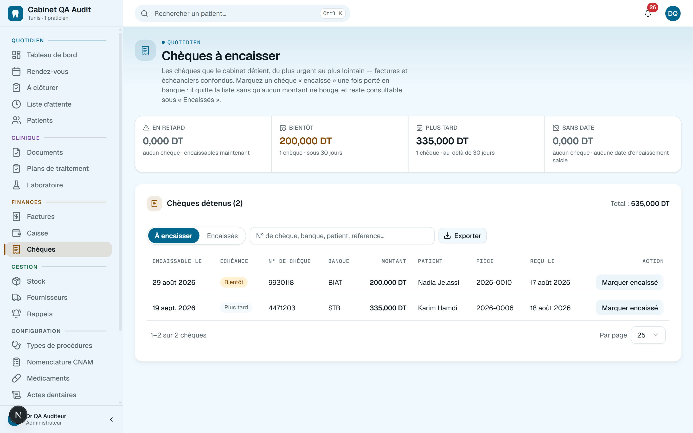
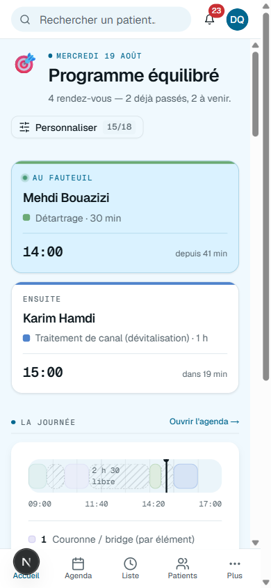

Vous le saisissez une fois.
Le logiciel fait le tour.
Agenda, dossier, odontogramme, devis, CNAM, caisse, stock. Un seul logiciel, en français — et tout y est relié, donc rien ne se retape et rien ne se perd.

Une journée au cabinet
Du premier café à la dernière facture.
Cinq moments, cinq écrans — et la même saisie qui circule de l'un à l'autre sans que personne la recopie.
L'agenda de la journéeQuotidien
Quatre rendez-vous, deux déjà passés. Jamais deux patients sur le même créneau — et le rappel est parti hier soir, tout seul.
Au fauteuilClinique
On clique la dent, on note l'acte. Le devis se remplit à partir de là, et le stock se déduit au passage.
Ce qui n'est pas finiQuotidien
Venu ? soigné ? payé ? Le logiciel l'a remarqué sans qu'on lui demande, et ne pose qu'une question à la fois.
La caisse du soirFinances
Espèces, chèque, carte, virement. Chaque mouvement est là — pas seulement le total — et un chèque garde son numéro et son échéance.
Le mois se raconte seulFinances
Encaissé, facturé, net, taux d'absence, et la tendance sur six mois. Personne n'a additionné quoi que ce soit.


… et demain matin, une relance ramène le patient. La boucle repart.
Le détail qui compte
Écrit pour la Tunisie, pas traduit.
La nomenclature CNAM, le bulletin BS1, le plafond annuel, l'arrêt de travail imprimé sur le vrai formulaire P 061. Le timbre, la TVA, les gouvernorats. Et le chèque postdaté, classé par échéance — parce qu'ici, c'est comme ça qu'on paie.

La question qu'on pose en dernier
Et si je perdais tout ?
C'est la seule panne qu'on ne rattrape pas. Alors elle est traitée avant les autres.
Une sauvegarde par heure
Et relue juste après, pour vérifier qu'elle est vraiment lisible. Sept points de restauration, plus l'archive complète du cabinet quand vous voulez.
La coupure ADSL n'arrête rien
Installé sur le poste du cabinet, le logiciel sert tout votre réseau depuis votre propre disque. Ou hébergé, si vous préférez y accéder de chez vous.
Chaque modification a un auteur
La secrétaire encaisse sans voir les totaux du cabinet, et un paiement se corrige par un avoir motivé — jamais en effaçant.
L'inventaire
Rien à garder à côté.
Pas de cahier en plus, pas d'Excel parallèle, pas de deuxième abonnement. Quatre zones, vingt-quatre modules — rangés dans l'application comme ici.
Agenda, salle d'attente, dossiers, rappels.
Odontogramme, soins, devis, CNAM, radios.
Notes, caisse, chèques, créances, dépenses.
Stock, fournisseurs, prothèses, rôles, exports.
Voir les vingt-quatre modules
Quotidien
- Agenda — jour, semaine, mois, multi-praticiens
- Salle d'attente — qui est arrivé, qui attend
- Fiche patient — antécédents, allergies, assurance
- Doublons signalés — avant la création, pas après
- RDV récurrents — une série posée en une fois
- Import CSV — arriver avec 3 000 patients
Clinique
- Odontogramme — adulte, enfant, mixte
- Fiches de soins — acte, dents, notes, praticien
- Plans de traitement — ordonnés, révisables, échéancier
- Ordonnances — catalogue de médicaments intégré
- CNAM — nomenclature, BS1, plafond, P 061
- Fichiers patients — radios, DICOM, STL, consentements
Finances
- Notes d'honoraires — timbre, TVA, sans trou
- Extrait de caisse — chaque mouvement, pas un total
- Chèques postdatés — classés par échéance
- Créances — qui doit combien, depuis quand
- Avoirs — corriger sans effacer, avec motif
- Dépenses — loyer, labo, consommables
Gestion
- Stock — lots, péremptions, seuils
- Fournisseurs — WhatsApp là où leur nom apparaît
- Bons de prothèse — envoyé, en cours, reçu, posé
- Rôles — admin, praticien, secrétaire
- Journal d'activité — chaque modification a un auteur
- Export Excel — neuf listes, pour le comptable
Dans la poche
L'application Android.
Le même dossier, le même agenda, la même caisse — et une notification quand un rendez-vous bouge. Pas encore sur Google Play : elle s'installe directement, en une minute.
- Depuis votre téléphone, touchez Télécharger pour Android. Chrome vous demandera de confirmer : c'est normal pour un fichier installé hors du Play Store.
- Ouvrez le fichier téléchargé, puis autorisez l'installation depuis cette source. Android ne le demande qu'une fois.
- Lancez Gestion Clinique et connectez-vous. Rien d'autre à configurer : le serveur est déjà renseigné.
Sur iPhone ? Il n'y a rien à télécharger : ouvrez
front-7476.onrender.com dans Safari, touchez Partager puis
Sur l'écran d'accueil. L'icône s'ajoute et l'application s'ouvre en plein écran, comme
une application installée — sans passer par l'App Store.

Demain matin, 08:00.
Trente jours pour voir si le cabinet respire mieux. Sans carte bancaire — et vos données repartent avec vous quand vous voulez.